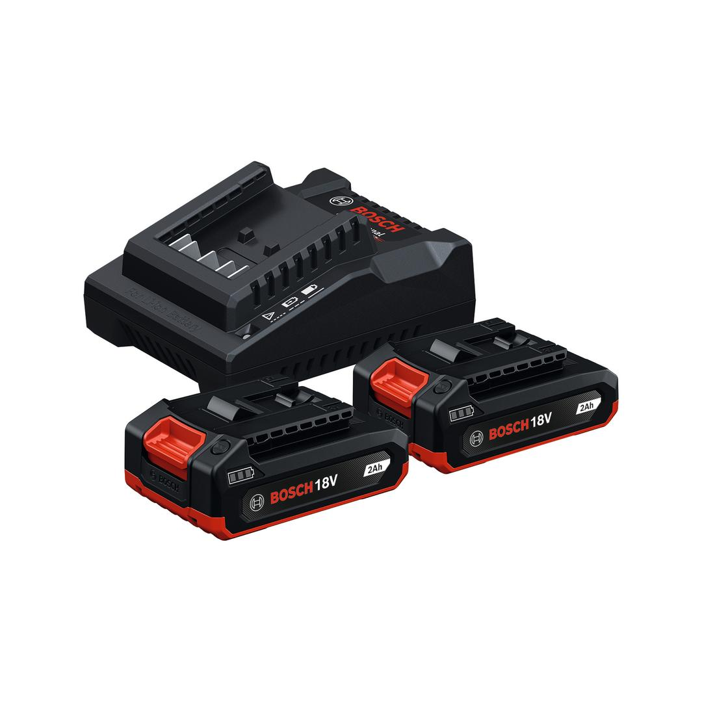
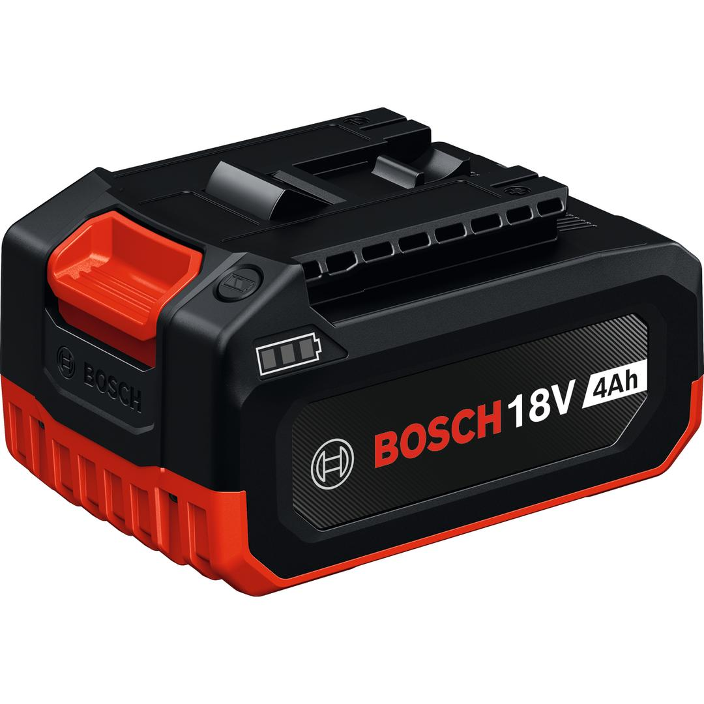

1600A03C0S


| Battery voltage |
18.0 V |
| Battery 1 weight |
0.38 kg |
| Battery charging voltage |
18 – 18 V |
| Charge current |
2.0 A |
| Charger weight |
0.333 kg |
| Battery 1 capacity |
2.0 Ah |
GBA18V-40 battery delivering up to 1000W maximum power*
Up to 1000W maximum power (based on internal lab testing; instantaneous maximum power with a fully charged new battery). Design for work efficiency: Push-down button design with finger grip area for quick and efficient work setup without interruption. More robust and durable: to withstand drops and harsh working conditions. One battery fits all: compatible with the Bosch Professional 18V System and the multi-brand battery alliance AMPShare
The GBA18V-40 can deliver up to 1000W of maximum power (based on internal lab testing; instantaneous maximum power with a fully charged new battery). The push-down button design with finger grip area allows for quick and efficient work setup without interruption. The battery is also more robust and durable to withstand drops and harsh working conditions.
The GBA18V-40 is a lithium-ion battery pack featuring a 3-LED fuel gauge that displays the state of charge. Compatible with the Bosch Professional 18V system and the multi-brand battery alliance AMPShare.